An ambient dashboard for always-on screens: six clock faces, a living sky, a temple of old wisdom, and a terminal with 134 commands.
It runs entirely in your browser (no account, no server of ours), installs like an app, and keeps working offline. Leave it on a spare screen, or dive in with the terminal.
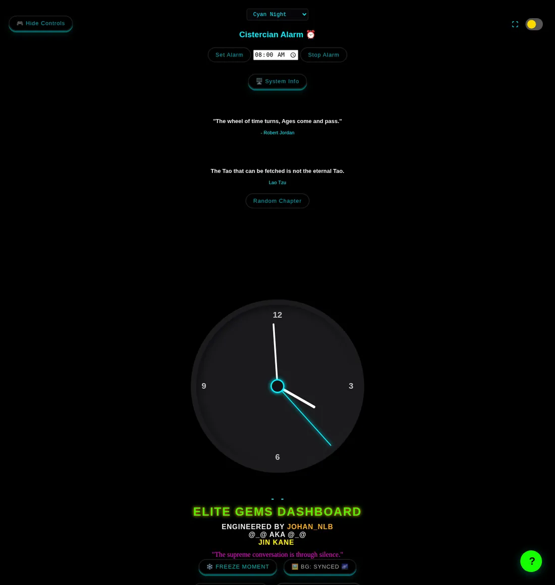
STYLE button, swipe left/right on the clock, or type clock cistercian in the terminal.💻 Command Runner. Type commands to see everything, help <command> for details, and press Tab to complete.planets, moon or sun, then scroll to Master's Astrolabe and press Jump to… → Next Full Moon.oled on for true-black, and type backup once to save your settings.Tip: everything is reversible. The only destructive command is nuke, and it asks for --yes first.
Classic, Glass, Digital, Cistercian, Cosmic and Celestial. Cycle with STYLE, swipe on touch screens, or choose one directly: clock classic|glass|digital|cistercian|cosmic|celestial.
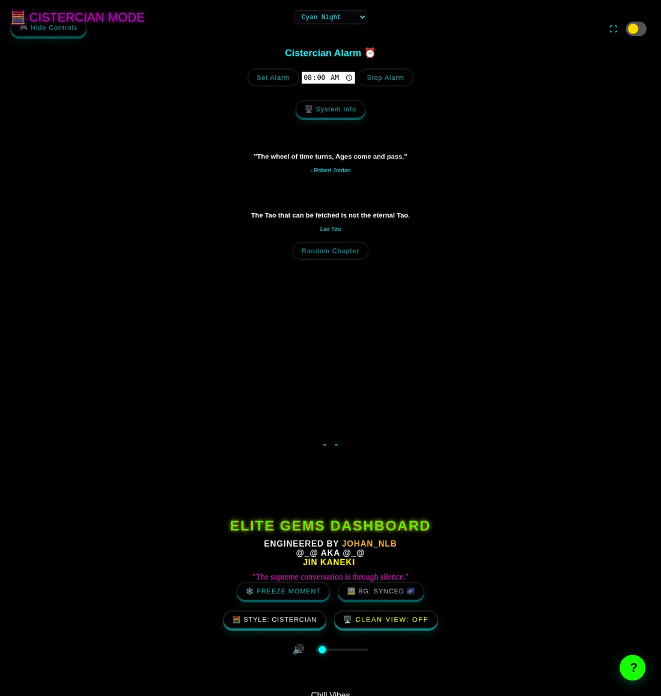
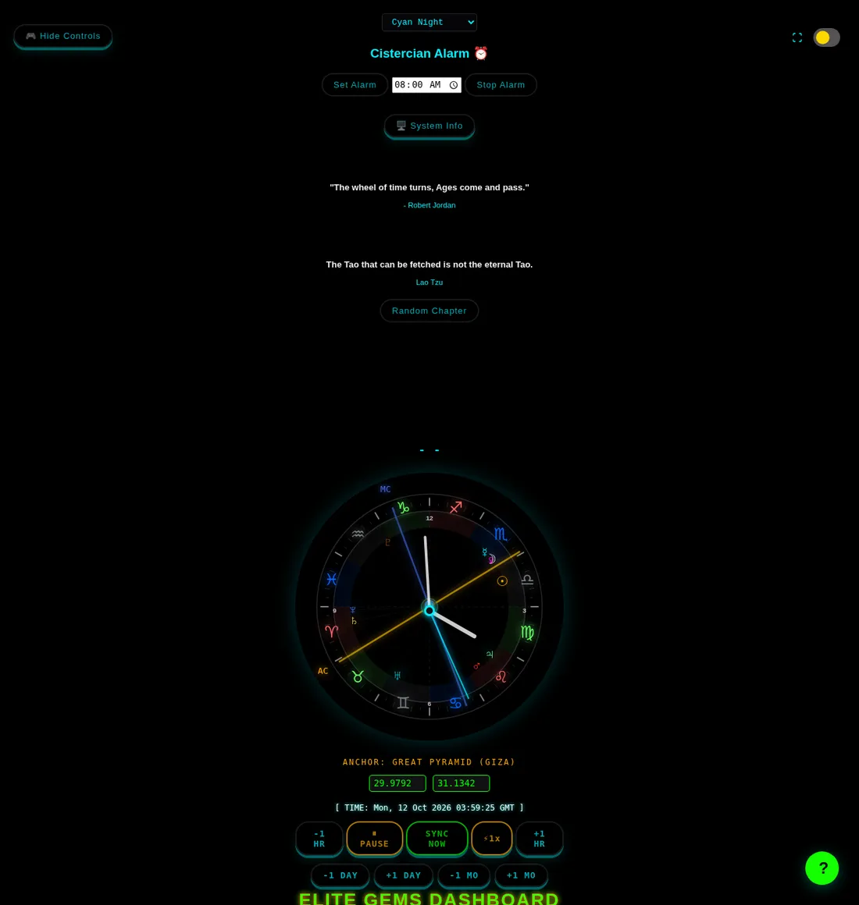
Slides rotate every minute. The background can follow the slide (Synced), cycle on its own from the independent folder (Independent), or be off.
| Do this | …to get this |
|---|---|
gallery next / gallery prev | step the slideshow forwards / backwards |
bg next / bg prev | step the independent background folder (switches BG to Independent; the 30-second timer restarts) |
B · double-click the background · FREEZE | freeze / unfreeze the current slide and background |
Hide Controls · Clean View | hide the buttons; Clean View has three states (all · text hidden · images + text hidden) |
| the ⛶ button | fullscreen |
oled on switches every background off (pure black pixels are off on OLED), removes blur and glow, and nudges the picture 0–2 px every three minutes to prevent burn-in. oled auto turns it on from your local sunset to sunrise (set the place with anchor). The choice survives reloads.
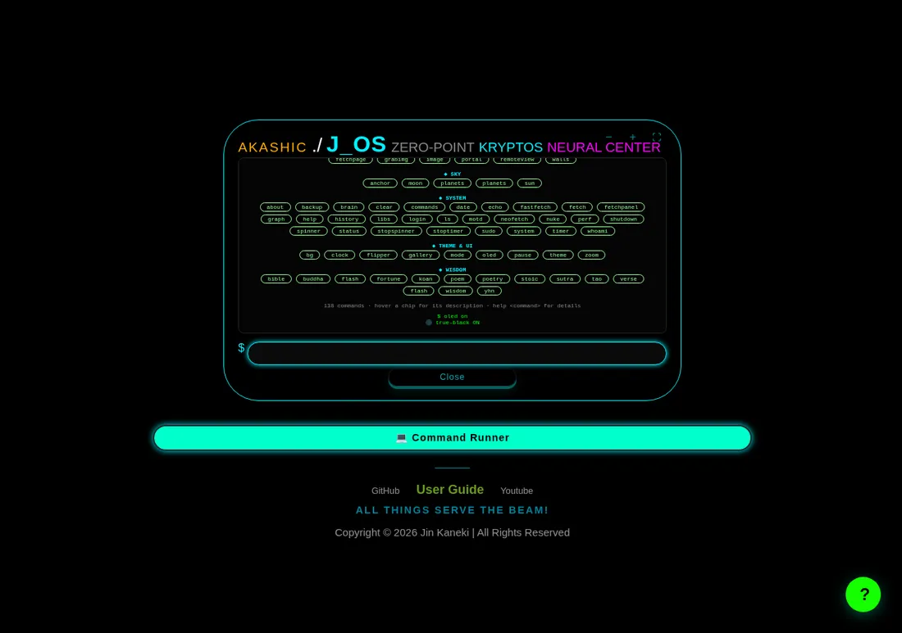
oled on — the slideshow layer is hidden entirely.Set a time at the top and press Set Alarm. Browsers only allow sound after you have touched the page once, so tap anywhere after loading before relying on an alarm overnight.
The Astrolabe, the Cosmic/Celestial clock and the projection view now share one clock. Move time in any of them and all of them follow.
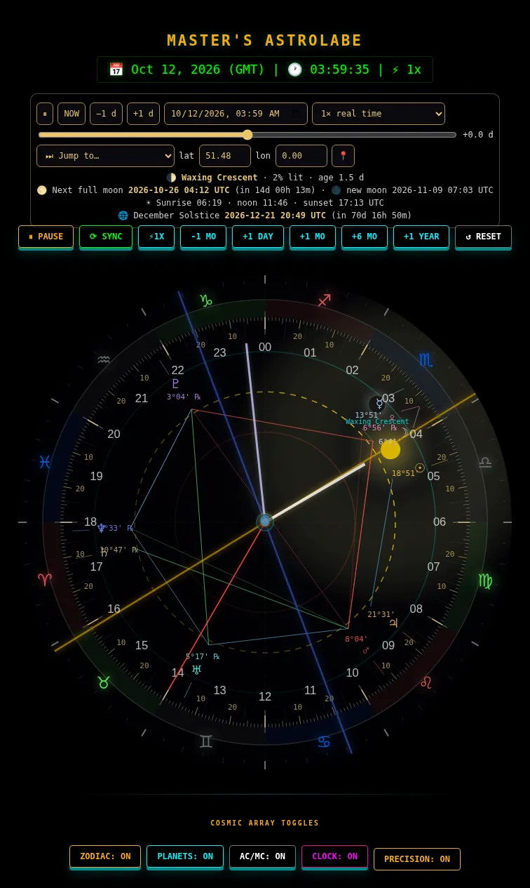
Date-time picker, ±1-year scrubber, a speed ladder in plain words (60× · 1 s = 1 min … 1 s = 1 year), event presets (next new moon, first quarter, full moon, last quarter, equinoxes, solstices, next sunrise/sunset), latitude/longitude with a 📍 button, and a live readout: moon phase and age, next full moon with a countdown, sunrise/noon/sunset and the next solstice or equinox.
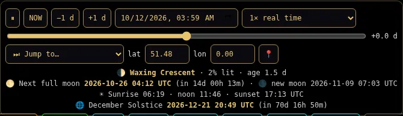
<astro-controls> — presets, picker, scrubber and live readout.ZODIAC · PLANETS · AC/MC · CLOCK · PRECISION toggle the layers. Precision adds the 1° bars with degree numbers, de-cluttered planet glyphs with their true degree (a thin leader line points to the exact position), ℞ marks and aspect lines — conjunction, sextile, square, trine, opposition — which are brighter the tighter they are.
The address bar always describes what you are looking at, e.g. #t=2026-12-21T20:49:00Z&lat=29.979&lon=31.134&rate=60. Copy the URL and anyone opening it sees the same sky, place and speed. Live mode (now, 1×) leaves out the time on purpose.
| Command | Shows |
|---|---|
planets (alias sky) | Sun…Pluto: sign, degree and minute, ℞ |
moon | phase, % lit, age and the next four phases with dates |
sun | sunrise / noon / sunset at your anchor, and the next equinox or solstice |
anchor <lat> <lon> · anchor giza|greenwich|jerusalem|mecca|kyoto|me | sets the observer location used above |
How accurate is it? Sun about 0.01°, planets about 1–2 arc-minutes (1800–2050), the Moon about 0.1–0.3°. Equinoxes, solstices, oppositions and eclipses were checked against published dates. It is a precise visualisation, not a replacement for a professional ephemeris such as Swiss Ephemeris — particularly for the Moon's exact minute.
Press GNOSIS (the button carries the spiral emblem). The page unrolls sideways between two rollers. A sticky wheel of gates follows your reading — click a gate, or use ← → while it has focus, and the wheel turns to the section. The hub opens the second book, The Living Dashboard. Close it with the CLOSE button.
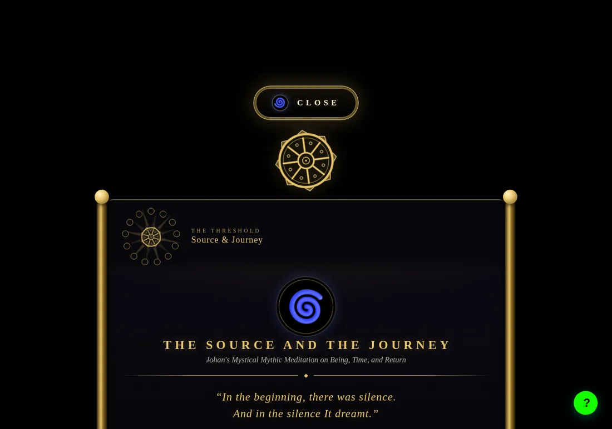
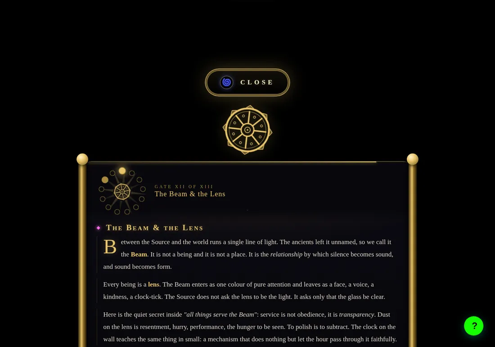
The slowly turning wheel below the GNOSIS button unrolls a hidden scroll from top to bottom. Three tabs: Genesis 1:1–3 in Hebrew with the 1917 JPS English, Tao Te Ching chapter 1 (Legge, 1891) and a few Hermetic lines. Click the wheel again to roll it up.
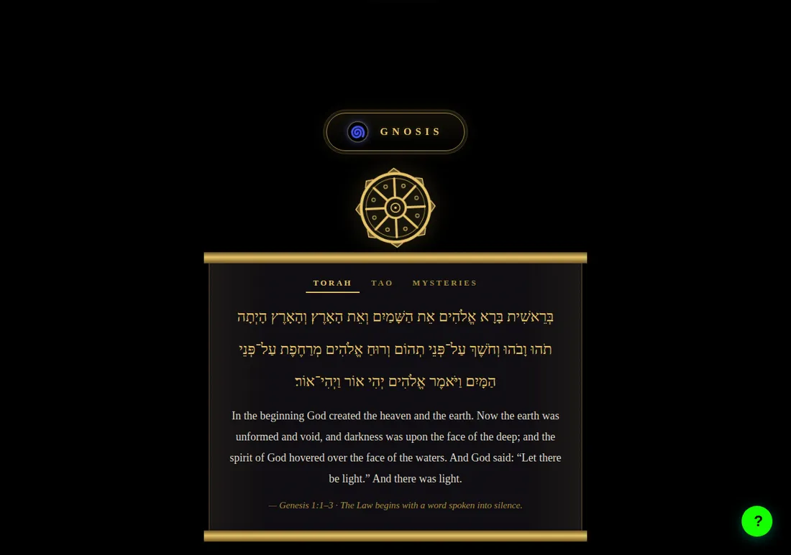
Click any sephirah to see its pillar, planet, divine name, archangel and a question to contemplate — and, for the planetary ones, where that planet is right now. The 22 paths carry their Hebrew letters (Golden Dawn attribution). The light crosses the Tree along the Lightning Flash from Kether to Malkuth.
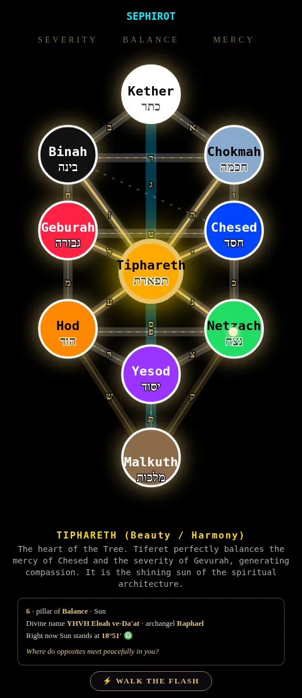
| Command | Does |
|---|---|
flash | walks the Flash again and again (6 s per sephirah) until you stop it |
flash 3 | …3 seconds per sephirah (2–30) |
flash --view | …and scrolls the Tree into view first |
flash --once | one pass only |
flash stop or Ctrl + C | stop |
The ⚡ WALK THE FLASH button walks the Tree once and stops.
cistercian 2026 draws a number (0–9999) as a monastic glyph, cistercian now your current time, cistercian learn the nine shapes and the four quadrants.
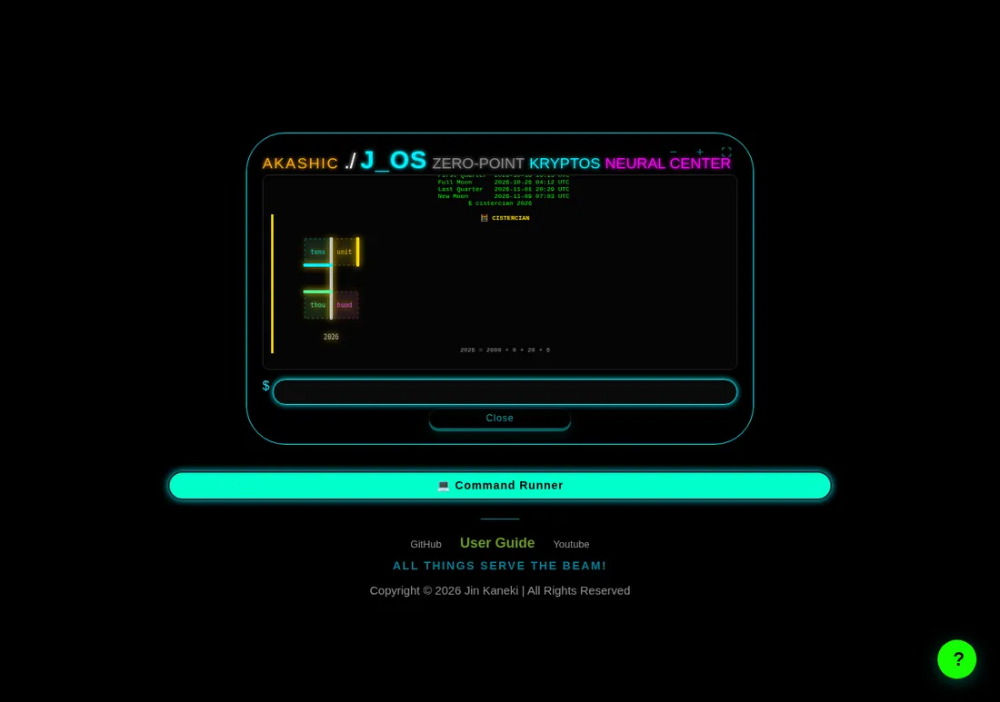
| Key | Does |
|---|---|
| Tab | complete a command, then its arguments; press twice to list the choices |
| ↑ ↓ | previous / next command (kept across reloads; passwords are never stored) |
| Ctrl + L | clear the screen |
| Ctrl + C | stop running effects, timers, spinners and the looping Flash |
| Esc | close the terminal |
Mistype a command and it suggests the closest ones as clickable chips. help <command> shows usage; commands <word> searches names and descriptions.
| Command | What for |
|---|---|
planets moon sun anchor | the sky, from your place |
clock <style> gallery next|prev bg next|prev oled | look & feel |
remoteview <url> fetchpage <url> grabimg <url> portal <url> | read, inspect, collect images from, or embed a web page |
iptv search <words> iptv all 2 tv radio | live TV and radio (search covers the whole 10 000-channel index) |
youtube <url> (alias of play youtube) | play a video inside the terminal |
define <word> wiki <topic> weather news | information |
cistercian flash tao koan | mysticism |
backup nuke perf libs | housekeeping and diagnostics |
Generated from the running dashboard, so it always matches the code. Type to filter.
cipher | Cipher manual |
cistercian <0-9999> | now | date | learn | Draw a number as a medieval Cistercian glyph alias: cist |
decode | Decode |
encode | Base64 / binary / hex encode |
handshake | Set vault password |
kryptos | Kryptos cipher |
mirror | Atbash mirror cipher |
reverse | Reverse text |
shift | Caesar shift |
stegano <hide|reveal> … | Zero-width steganography |
tag <set|get|view|clear> … | Private tag store |
vault <enc|dec> <password> <text> | AES-256-GCM vault |
vigenere | Vigenère cipher |
airmon | Simulated airmon-ng |
gpio | GPIO helper |
hack | Fake hacking animation |
hashcat | Simulated hashcat |
htop | System monitor |
kali <hash|scan|crack|inject|genkey|banner|arch> | Kali toolkit |
nmap | Simulated nmap |
raspberry | Raspberry Pi pinout |
wifite | Simulated wifi audit |
anime | Anime top 10 |
ascii [n] | ASCII art |
banner | Banner |
cowsay <text> | Cowsay |
flow | Flow visual |
game <name> | Mini-games |
glitch | Glitch effect |
intersect [--yes] | ⚠ 45 s full-screen flashing at 10 Hz |
intersectslow | 60 s slow neural sequence |
joke | Dad joke |
palindrome | Palindrome check |
piano | Play the piano |
react | React build simulator |
riddle | Riddle with reveal |
rotate | Rotate/scramble text |
run | RPG: Akashic Mainframe |
sator | Sator square |
scroll | Scroll bounce |
slide | Slideshow |
biology | Biology fact |
case [resistor|decode|ohm|…] | Engineering calculator |
crypto [coin] | Crypto price |
cstip | Computer-science tip |
define <word> | Dictionary |
electronics | Electronics fact |
engineering | Engineering marvel |
hackernews | Hacker News top 5 |
learn | Learn something |
news | BBC world news |
physics | Physics formula |
qr <text> | QR code |
space | Space fact |
technology | Tech headlines |
weather [city] | Weather |
wiki <topic> | Wikipedia summary |
homing | Homing beacon tone |
ipset | Personal IPTV list |
iptv | IPTV channel browser |
play <audio|youtube> <url> | Play media |
radio | Radio stations |
stop | Stop media & animations |
tv | Live TV |
youtube <url|id> | Alias for: play youtube <url> alias: yt |
aprsmap [fi|direct] | APRS ham-radio map |
chat [mqtt|p2p|firebase|-all] | Chat channels |
disconnect | Close chat links |
mesh | Mesh network visual |
netorbit | Network orbit visual |
ping | MQTT radar sweep |
pingg | Network ping |
pingstop | Stop radar |
fetchpage <url> | Title, OG/Twitter data, icons, feeds, JSON-LD, page stats |
grabimg <url> [--all] | Every image on a page: img, srcset, lazy, og:image, CSS |
image | Random image |
portal [--mobile] <url|shortcut> | Embed a site in a sandboxed iframe |
remoteview <url> [--full] | Readable text of any page (proxy chain + reader fallback) |
walls | Random wallpaper |
anchor <lat> <lon> | <place> | me | Set the observer location used by sky commands |
moon | Phase, illumination, age and the next four phases |
planets | Positions of Sun…Pluto right now (sign, degree, retrograde) alias: sky |
sun | Sunrise/noon/sunset at your anchor + next equinox/solstice |
about | About J_OS |
backup | backup import | Save / restore your EliteGDX data as a file |
brain | Graph help / reset |
clear | Clear the terminal |
commands [search] | Every command, grouped. Click one to fill it in. alias: cmds, apropos |
date [utc|iso|unix] | Date/time |
echo <text> | Print text |
fastfetch | Quick system info |
fetch | System info panel |
fetchpanel | System info panel |
graph | Neural command graph |
help [command] | Command list, or details for one command |
history [-c] | Show / clear command history |
libs | Lazy-loaded libraries and their state |
login | Akashic splash |
ls | List virtual files |
motd | Message of the day |
neofetch | ASCII system info |
nuke [--export] [--yes] | Factory reset (EliteGDX data only) |
perf | Render loops: state and real frames-per-second |
shutdown | Enter Mirror Mode |
spinner | Spinner animation |
status | Status report |
stopspinner | Stop spinner |
stoptimer | Stop the timer |
sudo | Ask nicely |
system | System monitor |
timer <seconds> | Countdown with beeps |
whoami | Show your persona |
bg next | bg prev | Step the independent background folder forwards / backwards (switches BG to independent) |
clock <classic|glass|digital|cistercian|cosmic|celestial> | Pick a clock style directly |
flipper | Flipper Zero skin / subghz |
gallery next | gallery prev | Step the slideshow forwards / backwards |
mode [flipper|midnight|matrix|crimson|cyber|hologram|stealth|off] | Terminal skin |
oled [on|off|auto] | True-black mode with pixel-shift (auto = black from sunset to sunrise) |
pause | Freeze/resume the background |
theme [cyan|magenta|amber|matrix] | Colour profile |
zoom [in|out|reset] | Zoom the page |
bible | Random verse |
buddha | Buddha quote |
flash [seconds] [--view] [--once] | flash stop | Walk the Lightning Flash Kether→Malkuth, repeating until you stop it alias: walkflash |
fortune | Fortune |
koan | Zen koan |
poem | Poem |
poetry | Poetry |
stoic | Stoic quote |
sutra | Buddhist sutra |
tao | Tao Te Ching |
verse | Bible verse |
wisdom | Random wisdom |
yhn | Yohan Te Ching |
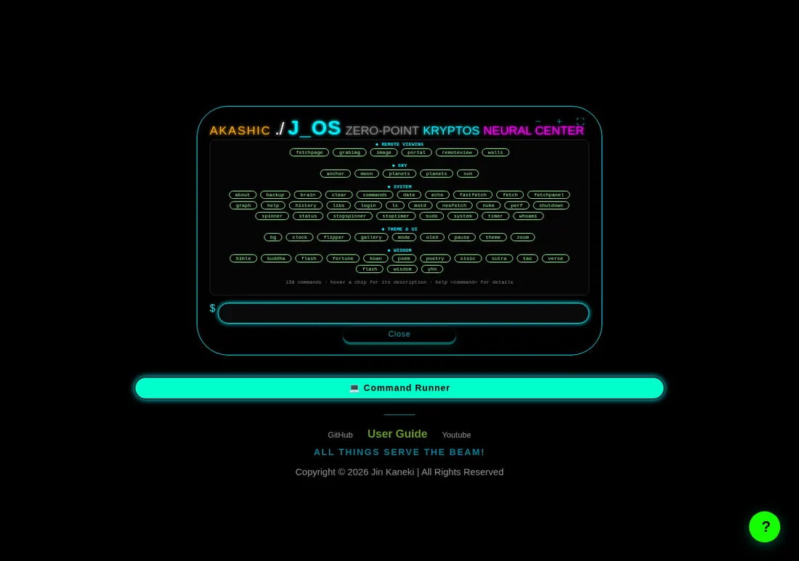
commands inside the terminal: grouped, clickable, with tooltips.Settings, command history (never passwords), your private tags, the vault key from handshake, your sky location and a few flags — all under the prefix eg: in your browser's local storage. Nothing is sent to us; there is no account.
backup downloads one JSON file with everything above.backup import opens a file chooser and restores it — on the same browser after a mistake, or on a new phone or computer (local storage does not travel between devices).nuke alone only warns. nuke --export makes the backup, then nuke --yes erases only EliteGDX's own data (never other sites).Keep backup files private: they contain your vault key and tags in plain text. Import accepts only eg: keys, so a stray file cannot overwrite anything else.
| When | Who | Why |
|---|---|---|
| on every visit | Google Fonts, GoatCounter (privacy-friendly visit counter), unpkg (the Cistercian clock library), dummyjson (quotes) | fonts, anonymous statistics, the clock face, the quote widget |
| only when you use a feature | YouTube (iframe API), the pinned player libraries (HLS, MQTT, PeerJS, QR, Firebase — local copies when vendored) | video, live TV, chat, QR codes |
only when you run remoteview / fetchpage / grabimg | a CORS proxy (your Worker first, then public ones), then Jina Reader or Microlink as fallbacks | browsers cannot read other sites directly; the chosen proxy sees the URL you asked for |
only for weather, define, wiki, crypto, news… | the public API behind each command | live information |
After the first visit the dashboard opens without a connection (the clocks, Astrolabe, Gnosis, Tree and terminal all work; live-data commands need a network). When a new version is ready a toast says New version ready — Refresh; it never reloads behind your back.
Q: tv or youtube says it could not load a library.
A: Press F12 → Console and read the red line. “blocked by CORS policy” means a stale copy of the loader (update eg-core.js and libs.config.js — YouTube must be marked plain: true). ERR_BLOCKED_BY_CLIENT means an ad-blocker is stopping the YouTube script; pause it for this site.
Q: define returns nothing.
A: It tries a free dictionary API and falls back to Wiktionary. If both fail you are offline or rate-limited; try again in a minute.
Q: fetchpage / grabimg / remoteview fail.
A: Public proxies come and go. Deploy your own free Cloudflare Worker (tools/cors-worker.js) and put its address in script/libs.config.js as workerUrl. Sites that block bots, or pages rendered entirely by JavaScript, may still return little.
Q: I changed the code but the browser shows the old version.
A: Bump VERSION in sw.js and EG.VERSION in eg-core.js, reload, then press Refresh in the toast. During development tick Update on reload in DevTools → Application → Service Workers.
Q: The favicon did not change.
A: Browsers cache favicons aggressively. Open the site in a private window, or hard-reload with Ctrl + Shift + R.
Q: How do I completely reset my preferences?
A: nuke --export to keep a copy, then nuke --yes. Restore any time with backup import.
Q: Why does the Moon differ by a few arc-minutes from another site?
A: This dashboard computes the Moon from its principal terms (about 0.1–0.3°). Other tools use thousands of terms. Phases and eclipse dates still agree to minutes.
Q: The alarm was silent.
A: Browsers block sound until you interact with the page. Tap anywhere after loading, and keep the tab open (background tabs are throttled).
Q: How do I keep the screen awake?
A: The dashboard requests a wake-lock when you open it and asks again whenever the tab becomes visible. If your device refuses (low battery, iOS in some modes) change the system's auto-lock setting.
#t=… links.flash, gallery next|prev, bg next|prev, oled, backup, iptv search, cistercian, youtube and the sky commands.portal is sandboxed, passwords never reach history, nuke asks first.Engineered by Johan_nlb. Scroll texts: Hebrew Genesis (Masoretic), JPS 1917 English, Tao Te Ching by James Legge (1891) — all public domain. Astronomy: Meeus' Astronomical Algorithms and the JPL approximate Keplerian elements. Libraries: hls.js, mqtt.js, PeerJS, qrcode-generator, Firebase, cistercian-numerals. “All things serve the Beam.”